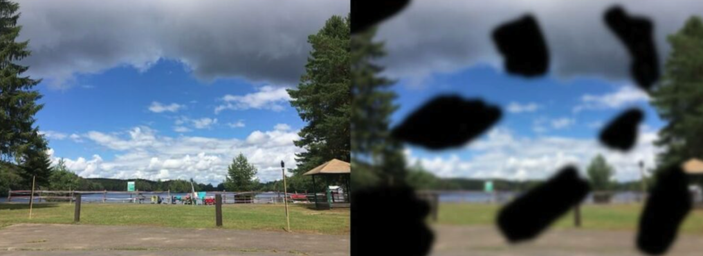
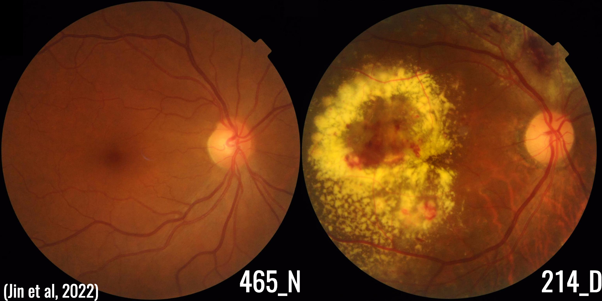

Chapter 1: Mathematics in Our World
Mathematics Is More Than Numbers
“Being good with numbers means being good at mathematics.” This is something we often hear from our elders. The idea is understandable. After all, nearly all the mathematics you encountered in high school involved the extensive use of numbers: arithmetic, algebra, trigonometry, statistics, probability, and calculus.
Numerical skill is certainly an important part of mathematics. However, mathematics is much more than calculation. It is concerned with patterns, structures, quantities, shapes, changes, relationships, and uncertainty. It also provides us with a language for describing these ideas and a logical framework for reasoning about them.
After completing this chapter, you should be able to:
- identify examples of patterns and regularities in nature and everyday life;
- explain why mathematics is more than numerical calculation;
- distinguish a mathematical model from the reality it represents;
- recognise examples of inductive and deductive reasoning;
- describe some practical, intellectual, and aesthetic dimensions of mathematics; and
- explain how mathematics contributes to Biology and modern technology.
Mathematics in an ordinary morning
Some uses of mathematics in everyday life are fairly obvious.
Suppose your first class begins at 8:00 a.m. What time should you wake up so that you can arrive on time?
You might estimate how long it takes to get out of bed, take a shower, get dressed, prepare your belongings, eat breakfast, and travel to school. At first, this appears to be a simple arithmetic problem: add the estimated duration of each activity, then subtract the total from the beginning of your first class.
But what you are doing is not merely arithmetic. You are also using probability, estimation, and decision-making under uncertainty.
For example, if you take public transportation, your travel time depends partly on how frequently buses, jeepneys, or tricycles pass your stop. If vehicles arrive regularly, you may expect only a short waiting time. A long wait is possible, but you may consider it unlikely. Your estimate may also change depending on whether your class is held on a weekday or a Saturday, since traffic conditions are usually different.
You may also consider the possibility of rain, road construction, long queues, or unexpected delays. You might then add an extra fifteen or twenty minutes as a safety allowance. How large that allowance should be depends on how uncertain the journey is and how strongly you wish to avoid being late.
In other words, you have constructed a simple mathematical model of your morning. The model does not reproduce every detail of reality. Instead, it identifies the factors that matter most and uses them to guide a decision.
A famous pattern
The video above brings together the famous Fibonacci sequence, the golden ratio, and several patterns associated with them. These ideas are closely connected, and the golden ratio provides the central thread linking much of the discussion. The name golden ratio is modern, but the underlying proportion is ancient.
In Book VI, Definition 3 of Euclid’s Elements, a straight line is said to be cut in extreme and mean ratio when “the whole is to the greater segment as the greater segment is to the less.”
Suppose a line segment \(AB\) is divided at a point \(C\). Let the longer segment \(AC\) have length \(a\) and the shorter segment \(CB\) have length \(b\). The whole segment \(AB\) then has length \(a+b\). Euclid’s definition becomes
\[ \frac{a+b}{a}=\frac{a}{b}. \]
In modern notation, this common ratio is denoted by the Greek letter \(\varphi\), pronounced phi.
Because \(a/b=\varphi\), the equation above gives
\[ \varphi=1+\frac{1}{\varphi}. \]
Multiplying by \(\varphi\) produces
\[ \varphi^2-\varphi-1=0. \]
The positive solution is
\[ \varphi=\frac{1+\sqrt{5}}{2}\approx 1.618. \]
The negative solution of the quadratic is rejected here because \(a\) and \(b\) are lengths.
The Fibonacci connection
The Fibonacci sequence begins
\[ 1,\ 1,\ 2,\ 3,\ 5,\ 8,\ 13,\ 21,\ldots \]
Each term after the first two is obtained by adding the two preceding terms. Now divide each term by the one before it:
\[ \frac{2}{1}=2,\qquad \frac{3}{2}=1.5,\qquad \frac{5}{3}\approx1.667,\qquad \frac{8}{5}=1.6,\qquad \frac{13}{8}=1.625,\qquad \frac{21}{13}\approx1.615. \]
The ratios move above and below \(1.618\), but gradually approach \(\varphi\). We can see why without proving every detail. If the ratio between successive Fibonacci numbers eventually settles near some number \(L\), the rule for generating the sequence forces
\[ L=1+\frac{1}{L}, \]
which is the same equation satisfied by the golden ratio.
Looking at the successive Fibonacci ratios and conjecturing that they approach a common value is an example of inductive reasoning: we observe a pattern in particular cases and propose a more general conclusion.
Starting from Euclid’s definition and logically deriving \(\varphi^2-\varphi-1=0\) is an example of deductive reasoning: the conclusion follows from definitions, assumptions, and valid algebraic steps. Inductive reasoning helps us discover plausible patterns; deductive reasoning helps us establish what must follow from our premises.
Optional linear-algebra connection — non-examinable
For readers who have encountered matrices, the Fibonacci numbers can be generated using
\[ Q= \begin{pmatrix} 1&1\\ 1&0 \end{pmatrix}. \]
One can show that
\[ Q^n= \begin{pmatrix} F_{n+1}&F_n\\ F_n&F_{n-1} \end{pmatrix}. \]
The eigenvalues of \(Q\) are found from
\[ \det(Q-\lambda I)=\lambda^2-\lambda-1=0, \]
and are therefore
\[ \lambda_1=\varphi=\frac{1+\sqrt5}{2}, \qquad \lambda_2=\frac{1-\sqrt5}{2}=-\frac1\varphi. \]
Repeated powers of the matrix are increasingly governed by \(\varphi\) because \(\varphi>1\), while \(\lvert-1/\varphi\rvert<1\). This is why
\[ \frac{F_{n+1}}{F_n}\longrightarrow\varphi. \]
Strictly speaking, \(Q^n\) itself does not converge: its entries grow without bound. It is the normalized matrix \(Q^n/\varphi^n\) that approaches a finite matrix. None of this matrix material is required for assessment.
A connection with plant growth
In botany, phyllotaxis describes how leaves, seeds, or other plant organs are arranged. In some spiral arrangements, successive organs form an angle close to the golden angle
\[ \frac{360^\circ}{\varphi^2}\approx137.5^\circ. \]
This spacing is associated with the familiar Fibonacci-like spirals seen in some flower heads and other plants. The pattern is a genuine subject of research in mathematical biology, but it should not be turned into a universal rule. Not every plant follows a golden-angle pattern, and plants do not calculate \(\varphi\). The pattern emerges from biological growth processes and the way developing structures interact in limited space.
The golden ratio is often used to make exaggerated claims about faces, paintings, buildings, shells, and galaxies. A shape that looks approximately golden is not evidence that the ratio was deliberately used or that it caused the shape to form. A mathematical claim should be supported by clear definitions, reproducible measurements, and—when biology is involved—a plausible biological mechanism.
A case in point is the familiar claim that the façade of the Parthenon was deliberately designed around the golden ratio. In the short video below, Professor Hannah Fry, Cambridge’s Professor of the Public Understanding of Mathematics, explains why the historical and geometrical evidence does not support that popular story.
This is also a reminder that mathematics is a human endeavour. People notice patterns, propose definitions, construct arguments, make mistakes, challenge claims, and improve earlier explanations.
Mathematical objects other than numbers — non-examinable
Most of the mathematics in this course will still involve numbers. Nevertheless, many branches of mathematics study objects whose central features are not numerical. The following video clip illustrates how broad mathematics can be. It is included for perspective, not as material you are expected to master in this course.
Group theory
Group theory studies symmetry, transformations, and systems of operations. For example, we may rotate or reflect a geometric figure while preserving its overall structure. Group theory allows us to study the rules governing such transformations without focusing primarily on numerical calculation.
Linear algebra
Linear algebra studies vectors, systems of linear relationships, and transformations between spaces. Although its computations often involve numbers and matrices, its deeper concern is how objects can be combined, transformed, compressed, or represented. It is fundamental to computer graphics, economics, statistics, engineering, and machine learning.
Graph theory
Graph theory studies networks of objects and the relationships connecting them. It can be used to represent roads between cities, friendships in a social network, links between websites, communication systems, biological interactions, and the spread of disease.
Category theory
Category theory studies mathematical structures by examining the relationships and transformations between them. Rather than concentrating on the internal details of a single object, it asks how different objects and systems are connected. It is an advanced subject, mentioned here only as an example of how abstract mathematical thinking can become.
Algebraic topology
Algebraic topology studies the shape and structure of spaces by translating geometric features into algebraic information. It can distinguish, for example, between separate components, loops, cavities, and higher-dimensional holes. These ideas have applications in physics, robotics, medical imaging, and data analysis.
We now return from this brief survey to a concrete biological problem. Several of these areas—especially linear algebra, graph theory, and algebraic topology—can contribute to ways of representing and analysing medical images.
A biological example: diabetic retinopathy — non-examinable
There are many other, less familiar kinds of mathematics that do not appear to use many numbers. Several of the examples above can help computers describe patterns that people recognise almost immediately.
Consider diabetic retinopathy (DR), an eye condition caused by diabetes. Diabetes can damage the small blood vessels in the retina, the light-sensitive layer at the back of the eye. In advanced cases, damaged vessels may leak or bleed, and the person may experience blurred vision, dark floating spots, or even blindness.

The first image illustrates what a person might see. To look for the disease, a clinician examines the retina itself. A fundus photograph is simply a colour photograph of the back of the eye.

In this example, the right-hand image looks much more irregular than the left. We can see large yellow regions and other visible changes. This particular case is fairly easy to distinguish by inspection, but not every case is so obvious. Early disease can be subtle, and an actual diagnosis must be made by a qualified clinician.
Many students in this class hope to become doctors or other health professionals. When many patients need screening, computers can help organise images and identify those that may require closer attention. The computer does not replace the clinician; it helps the clinician work through a large amount of information.
Helping a computer describe what we see
We might informally say that the diseased image looks “messier.” A computer does not understand that word. It needs measurable information.
One approach comes from topological data analysis (TDA). For the moment, the main idea is enough: TDA can look for simple features such as separate blobs and loops in an image. It can then summarise those features as a short list of numbers, sometimes called a topological signature.
Once each image has a numerical signature, we can compare groups using statistics. The same numbers can also be supplied to a machine-learning model, including an artificial neural network—another mathematical creation that combines ideas from probability, linear algebra, and calculus.
This does not mean that TDA diagnoses diabetic retinopathy by itself. Images are already made of numbers, and other computer methods can analyse their pixels directly. TDA simply gives us another description—one that focuses on shape and connectedness. Researchers must test whether that extra information actually makes a computer system more reliable.
A person can look at two images and say, “These look different.” Mathematics helps us state exactly what is different, turn that difference into something measurable, and test whether it is genuinely useful.
Is mathematics an exact science?
Mathematics is often described as exact, but that statement needs an important qualification. Pure mathematics can be exact within its definitions and assumptions. Once we agree on the rules, a valid proof establishes its conclusion with logical certainty. The real world, however, does not arrive with perfectly defined objects, flawless measurements, or assumptions that are always true.
Suppose someone says that he is 5 feet 6 inches tall. This normally does not mean that his height is exactly 66 inches. The measurement may have been rounded to the nearest inch; it may also vary slightly with posture, footwear, the measuring instrument, and even the time of day. Nevertheless, “5 feet 6 inches” is usually precise enough for an ordinary conversation or a form asking for someone’s height. Greater precision would add detail, but it would not necessarily be useful for the purpose at hand.
The same principle applies when mathematics is used to study traffic, populations, disease, climate, finance, or biological systems. A mathematical model keeps the features judged relevant to a question and leaves others out. It is therefore a simplified representation of reality, not reality itself. Its conclusions depend both on sound mathematics and on how well its assumptions and data represent the situation being studied.
This does not make applied mathematics unreliable. It means that a model should be judged in context: What is it intended to do? How accurate must it be for that purpose? What assumptions does it make? How uncertain are its measurements and predictions? A subway map is not geographically exact, for example, but it can still be an excellent model for finding the correct train.
Mathematics allows us to reason precisely about a chosen model. It does not guarantee that the model is a perfect copy of the world. A useful model is often not the one containing every possible detail, but the simplest one that is sufficiently accurate for its intended purpose.
Mathematics and collaboration
Mathematicians are good at working with quantities, finding patterns, identifying structure, and reasoning from carefully stated assumptions. These abilities are powerful, but they are not sufficient by themselves. As the familiar saying warns, “If all you have is a hammer, everything looks like a nail.” A mathematician who approaches a biological problem using mathematics alone may construct an elegant model that overlooks something biologically important.
Applying mathematics effectively therefore usually requires collaboration with domain experts—people with specialised knowledge of the subject being studied. In Biology, these may include laboratory researchers, field biologists, clinicians, epidemiologists, and public-health specialists. They help determine which questions matter, which assumptions are reasonable, what data can be collected, and whether a mathematical conclusion makes biological sense. Mathematicians, statisticians, and computer scientists can then help turn those questions into models, analyse the resulting data, and quantify what is known and what remains uncertain.
Many of you may never study advanced mathematics, and you do not need to become mathematicians. Nevertheless, a working grasp of mathematical ideas will help you communicate and collaborate with people who use them. It may allow you to recognise when a biological question can be measured, modelled, or investigated in a new way.
Some biologists specialise in mathematical or computational work, while others concentrate on laboratory, clinical, or field research. Modern science needs all of them. Important advances often arise when people with different forms of expertise can understand one another well enough to work on the same problem. One day, such a collaboration may help some of you develop a better cancer treatment, improve the management of HIV, or respond to a disease that has not yet emerged. The purpose of learning mathematics here is not merely to pass an examination; it is also to give you another language with which to participate in interdisciplinary science.
Check your understanding
These short activities are intended to help you use the ideas in the chapter, not merely read about them.
Model an ordinary journey. List the factors that could affect how long it takes you to travel to class. Which factors would you include in a useful model, and which details could you reasonably leave out?
Investigate a pattern. Calculate the next three Fibonacci numbers and the ratios of successive terms. Do the new ratios support the conjecture that they approach \(\varphi\)? Explain why this is evidence rather than a complete proof.
Describe an image mathematically. Compare the two retinal photographs above. Suggest one visible feature that could be measured numerically. Explain what information your proposed measurement captures and what it might overlook.
Question a claim. Find an everyday or biological claim involving a mathematical pattern. What definition, measurements, or evidence would you require before accepting it?
What it means to think mathematically
Being mathematically capable therefore involves more than performing calculations quickly. It includes the ability to:
- recognise patterns and relationships;
- identify relevant information;
- construct and evaluate models;
- reason logically from assumptions;
- account for uncertainty;
- compare possible solutions; and
- explain why a conclusion should be accepted.
Numbers remain indispensable, but they are only part of the story. Mathematics is not simply a collection of techniques for obtaining numerical answers. It is a way of organising information, examining relationships, solving problems, and thinking carefully about the world.
What decisions have you already made today that involved mathematics, even though you did not consciously perform a written calculation?